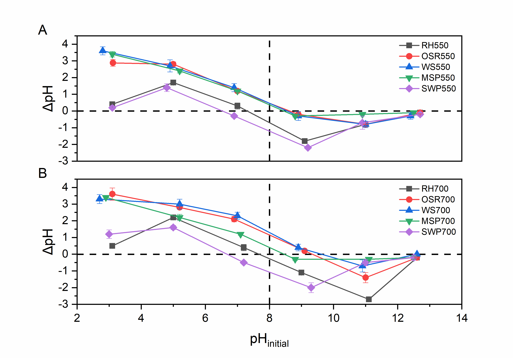
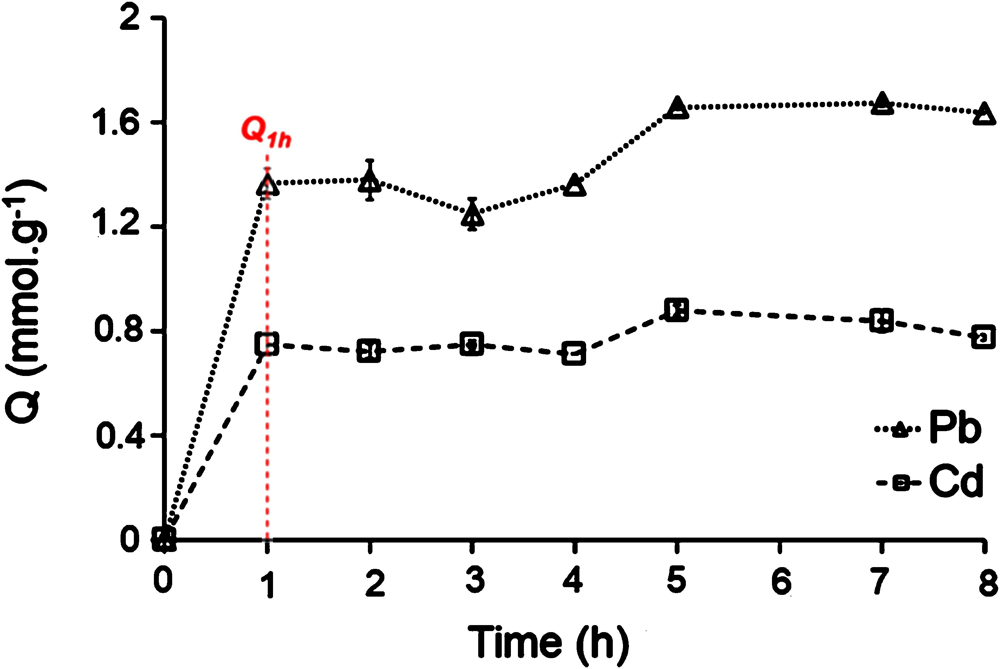

Project Summary: This page summarizes research efforts on the adsorption of organic dyes and toxic metals from aqueous solutions using engineered and low-cost sorbents.
Key Contributions:
Lead author of a study applying ML and experimental design for methylene blue removal using bone meal
Developed framework based on point of zero charge (pHpzc) to evaluate biochars for cationic dye adsorption
Co-authored a work on synthesis and characterization of yttrium silicate for Pb(II) and Cd(II) removal
Figure 1: Methylene blue removal by bone meal with ML-predicted and experimental responses

Figure 2: Relationship between point of zero charge and adsorption of cationic dye on biochars

Figure 3: Performance of yttrium silicate material for lead and cadmium adsorption
Image Credits:
Figure 1: Adapted from Biosorption of methylene blue by bone meal, Frontiers in Environmental Chemistry (2024)
Figure 2: Adapted from Role of Point of Zero Charge in the Adsorption of Cationic Textile Dye on Standard Biochars, Recent Progress in Materials (2022)
Figure 3: Adapted from Synthesis of a novel adsorbent based on yttrium silicate, Journal of Environmental Chemical Engineering (2020)